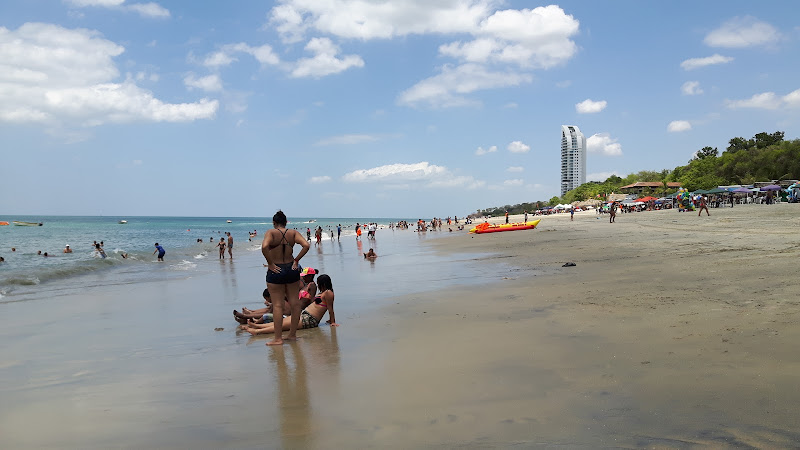

Santa Clara es conocida por ser una playa tranquila y familiar, ideal para disfrutar de un día relajante en la costa. Cuenta con varias opciones de hospedaje y restaurantes frente al mar.
Ubicación:
Santa Clara es una playa ubicada en el Pacífico de Panamá, dentro del distrito de Antón, en la provincia de Coclé.
Atracciones Principales:
- Isla de Contadora
- Corredor de Playas
- Playa Santa Clara
Accesibilidad:
Muy accesible en coche desde la Ciudad de Panamá, con opciones de transporte público como buses y taxis que estaran disponibles.
Actividades Adicionales:
Nadar, deportes acuáticos como el kayak y paddleboarding, excursiones en bote a las islas cercanas, ecoturismo y exploración de playas vecinas, y disfrutar de la gastronomía local.